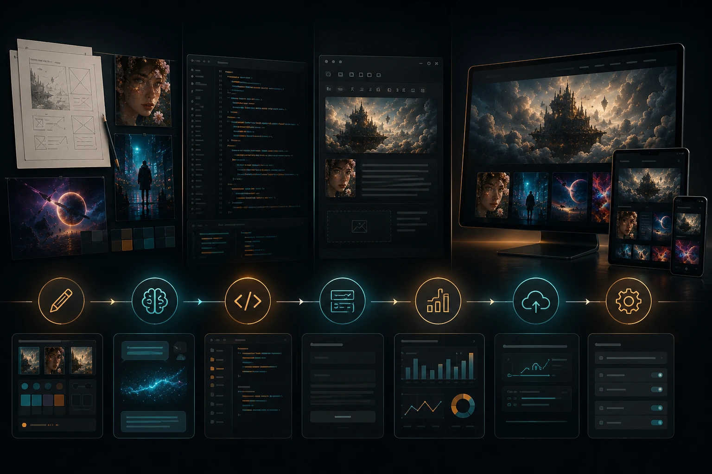

The Short Version
I recently built JasonArts.com with a lot of help from Claude.
I am a 3D artist, not a full-time web developer, so having an AI coding partner made it possible to create something far more customized than I would have attempted on my own.
The interesting part was not simply getting a website online. There are plenty of tools that can generate a functional page.
The real challenge was keeping the site from looking like every other AI-generated portfolio: rows of identical boxes, generic gradients, enormous empty sections, and enough rounded cards to build a small digital apartment complex.
I wanted something darker, more cinematic, and more connected to my actual work.
That required more than asking Claude to "make me a website." It became an ongoing process of giving creative direction, reviewing what it produced, identifying what felt wrong, and gradually shaping the code into something that felt like Jason Arts.
Starting With a Real Design Direction
Before Claude began writing code, I needed to decide what the site was supposed to feel like.
The goal was not a traditional corporate portfolio.
JasonArts.com needed to hold several different parts of my creative work under one roof: professional 3D visualization, AI filmmaking, The Orb, Jason Arts Records, books, videos, and experiments with new tools.
That could easily become cluttered.
I decided on a dark visual theme with large imagery, subtle gradients, minimal dividing lines, and sections that flowed into each other rather than sitting inside obvious boxes.
I wanted the images to carry the design.
The site also needed enough movement to feel alive without turning into an amusement park ride. Small transitions, image movement, hero effects, and restrained interaction made more sense than covering everything in animation simply because the browser technically allowed it.
Those decisions gave Claude something useful to work toward.
A coding model can build a layout quickly, but it still needs art direction.
Using Claude as a Coding Partner
The most useful way I found to work with Claude was to treat it less like a magic website button and more like a developer sitting beside me.
I could explain the result I wanted, show screenshots, point to a specific section, and describe what was bothering me.
Sometimes the request was technical.
Other times it was something like, "This feels too boxy," "the title needs to sit lower," or "the image should blend into the page instead of ending at a hard line."
That kind of feedback may not sound like code, but it is still valuable direction.
Claude could translate those visual notes into HTML, CSS, and JavaScript changes. I could then load the site, judge the result, and keep refining.
The first version was rarely the final version.
Some changes fixed one problem and created another. A desktop adjustment might break the mobile layout. A new animation might look great but slow down the page. A section could become technically cleaner while somehow feeling visually worse.
The process worked best when I changed one clear thing at a time and checked the result before moving on.
Building a Blog I Could Actually Maintain
One of the biggest additions was the blog system.
I did not want to manually open an HTML file and rebuild an entire article page every time I wanted to publish something.
That would work for about two posts before I suddenly developed a passionate interest in never blogging again.
Instead, Claude helped create a simple admin-style blog generator.
I can enter a title, category, excerpt, cover image path, article text, and call-to-action buttons. The generator then creates a ready-to-use HTML page and updates the site's blog data.
The body field uses a few simple formatting rules.
Section headings begin with two number signs.
Images are added with a short image-path command.
Custom link tokens can send readers directly to The Orb, Jason Arts Records, my books, or another project while also displaying a preview image.

That system matters because it turns blogging into a repeatable task instead of a coding project.
The easier publishing becomes, the more realistic it is to keep the site active with AI news, creative workflows, behind-the-scenes articles, and project updates.
Connecting the Less Exciting Parts
A website also needs several things nobody puts in the glamorous concept render.
The contact form needed somewhere to send messages.
Analytics needed to be connected.
The custom domain, hosting, site files, images, and updates all needed to work together.
I used GitHub and Cloudflare as part of the publishing setup, Formspree for the contact form, and Cloudflare Analytics to begin tracking site activity.
None of that is especially exciting compared with designing a cinematic landing page, but it is the difference between having a collection of local files and having a functioning website.
Claude was helpful here because it could explain the setup, update the code, and troubleshoot errors as they appeared.
It did not make the process completely effortless. There were still moments where settings, API options, permissions, and account dashboards seemed determined to send me through the same three screens forever.
AI cannot yet prevent every settings page from becoming a haunted corn maze.
The Parts AI Did Not Decide
Claude wrote a large portion of the site's code, but it did not decide what JasonArts.com should be.
It did not choose which projects mattered most.
It did not decide how The Orb should be presented, which images represented my professional work, or how the music, books, videos, and portfolio should relate to one another.
It also could not judge the design the same way I could.
Code can be correct while the page still feels wrong.
That is where my background as a visual artist mattered. Composition, hierarchy, spacing, contrast, image selection, motion, and mood still required a human decision.
The AI accelerated the construction.
It did not replace the taste.
What I Learned
The biggest lesson was to avoid starting with a vague request.
"Build me a cool portfolio" leaves far too many choices open.
A better request includes the purpose of the page, the desired mood, what should be emphasized, what should be avoided, and examples of the visual direction.
Screenshots also helped enormously.
Instead of trying to describe every detail in words, I could show Claude the exact section I was seeing and point out the problem.
I also learned to keep backups and make changes in manageable steps.
When a site is working, asking an AI to restructure half of it at once is a terrific way to discover several exciting new definitions of the word broken.
Small revisions are easier to test and easier to reverse.
Final Thoughts
Building JasonArts.com with Claude showed me what AI coding is genuinely good at.
It can lower the barrier between an idea and a working project.
It allowed me to build a custom site, create a reusable blog system, connect external services, and continue refining the experience without becoming a professional web developer first.
But the best results came when I supplied the direction.
The website needed my projects, my visual preferences, my criticism, and my decisions. Claude helped turn those decisions into a functioning site.
That is the workflow I find most exciting about creative AI.
The artist still decides what should exist.
The tool simply makes it much easier to build.